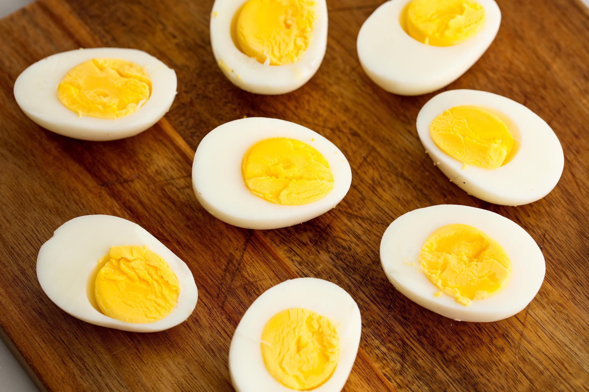

This is the Egg page

The egg is the organic vessel containing the zygote in which an embryo develops until it can survive on its own, at which point the animal hatches. An egg results from fertilization of an egg cell. Most arthropods, vertebrates (excluding live-bearing mammals), and mollusks lay eggs, although some, such as scorpions, do not.
Reptile eggs, bird eggs, and monotreme eggs are laid out of water and are surrounded by a protective shell, either flexible or inflexible. Eggs laid on land or in nests are usually kept within a warm and favorable temperature range while the embryo grows. When the embryo is adequately developed it hatches, i.e., breaks out of the egg's shell. Some embryos have a temporary egg tooth they use to crack, pip, or break the eggshell or covering.
The largest recorded egg is from a whale shark and was 30 cm × 14 cm × 9 cm (11.8 in × 5.5 in × 3.5 in) in size.[1] Whale shark eggs typically hatch within the mother. At 1.5 kg (3.3 lb) and up to 17.8 cm × 14 cm (7.0 in × 5.5 in), the ostrich egg is the largest egg of any living bird,[2] though the extinct elephant bird and some non-avian dinosaurs laid larger eggs. The bee hummingbird produces the smallest known bird egg, which weighs half of a gram (around 0.02 oz). Some eggs laid by reptiles and most fish, amphibians, insects, and other invertebrates can be even smaller.
Reproductive structures similar to the egg in other kingdoms are termed "spores," or in spermatophytes "seeds," or in gametophytes "egg cells".